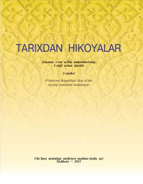

TH5-sinf o‘quvchilari uchun mo‘ljallangan O‘zbekiston tarixi bo‘yicha o‘quv qo‘llanma.
Ushbu darslik umumiy o‘rta ta’lim maktablarining 5-sinf o‘quvchilari uchun mo‘ljallangan bo‘lib, Vatan tarixi va tarixiy xotira tushunchalarini yoritib beradi. Kitobda o‘quvchilarga tarix fanini o‘rganish metodikasi, Vatan tushunchasining mohiyati va buyuk ajdodlarimiz merosi haqida ma’lumotlar taqdim etilgan.